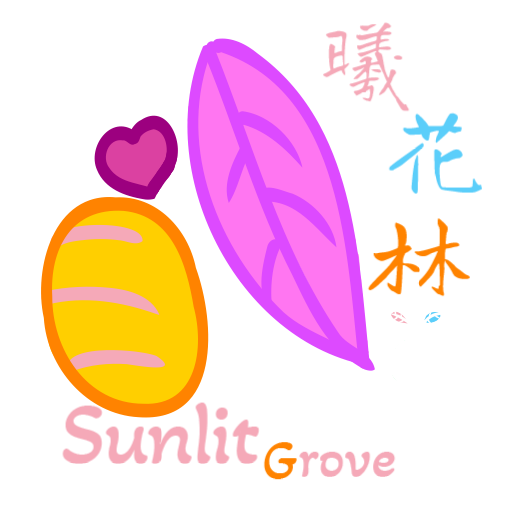

 🎀 網站主旨 | About This Site
🐾 在這個世界的某個角落，有一片柔軟又安全的空間，屬於每一位渴望被理解、被擁抱的靈魂。
本網站致力於提供：
- 🌸 關於 跨性別與多元性別身分 的溫柔介紹
- 🧪 HRT（荷爾蒙替代療法） 基礎資訊與個人經驗分享
- 💖 實用的 支援資源連結（如心理諮詢、社群團體、性別維基等）
- 🛍️ 自由創作的 小商店與療癒作品展示
- 💌 一個可以匿名反饋、分享、訴說的小角落
我們相信，每一種存在都值得被尊重、照顧與善待。
無論你是誰、來自哪裡、走在哪段旅途上——這裡都歡迎你。
 網站強調💡：
網站強調💡：
- 非醫療機構、不提供診斷或處方，所有資訊僅供參考
- 鼓勵用戶在安全與知情的基礎上，探索自我與身體的關係
- 支持「自我決定」、「性別自主」與「情緒照護」的價值
如果你覺得世界有點太重、現實太吵，
那就請妳躲進這個粉紅色的小空間，
讓我們一起慢慢呼吸，慢慢活，慢慢好起來 💗
🧾 網站責任聲明
歡迎您瀏覽本網站。本網站旨在分享關於多元性別、性別認同與相關社群資源的資訊與交流平台。請您在使用本網站前，仔細閱讀以下責任聲明內容。您一旦繼續使用本網站，即視為同意本聲明條款。
🧪 關於 HRT 資訊與連結
- 本網站不提供醫療建議、診斷或處方，所有內容僅供參考。
- 本網站不直接販售或供應任何藥物，也不參與任何交易行為。
- 用戶如選擇透過外部連結購買產品，該行為與本網站無關，所有風險與法律責任應由用戶自行承擔。
- HRT 用藥需依照個人健康狀況評估與醫療指示，請務必諮詢專業醫師後再進行任何療程或用藥行為。
🔗 第三方網站連結
本網站所提供之資源或外部連結，皆為協助資訊取得之目的。本站不保證其內容的準確性、安全性或合法性。用戶點擊第三方連結所導致的任何結果，本站概不負責。
🧍♀️ 用戶責任
使用本網站時，您需自行評估所取得的資訊是否適合自己的需求。若因使用本網站內容而導致任何健康、財務、法律或其他方面的損失，本站一概不承擔任何責任。
| Design | 糖糖 |
| Code | 糖糖 |
| Assisted | 小🧃 |
📌 本責任聲明可依需求進行更新與修改，請不定期回顧此頁面以獲得最新資訊。